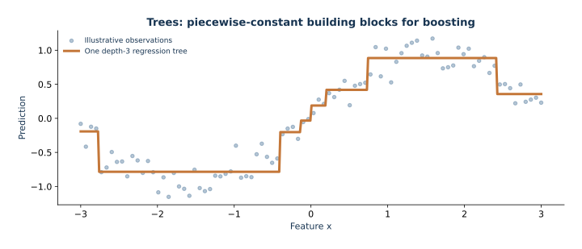
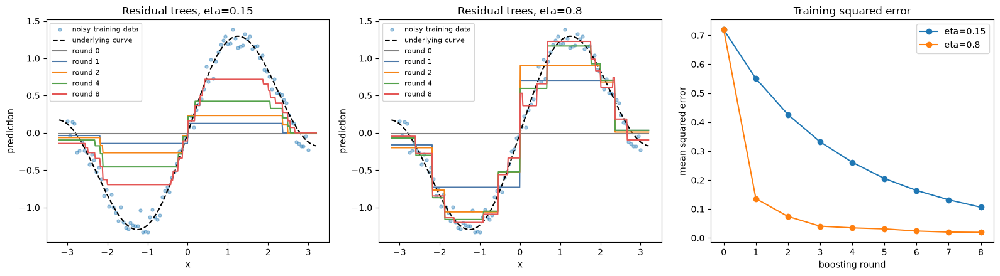
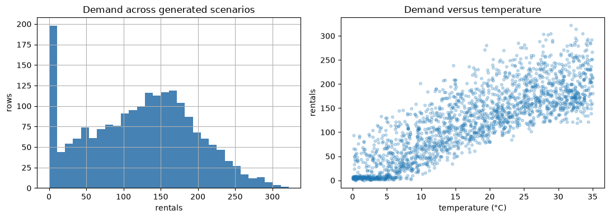
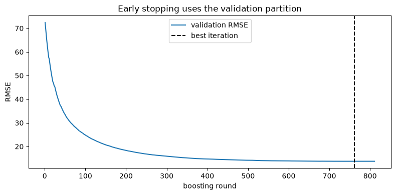
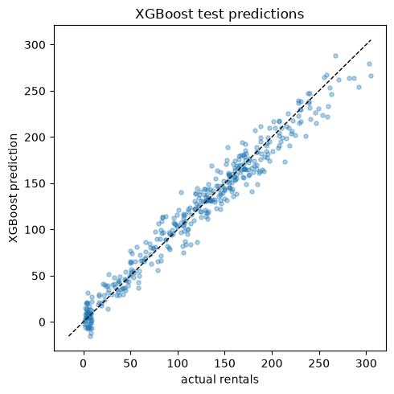

Lección 03 — XGBoost: boosting como optimización funcional
Construiremos un predictor aditivo, un árbol a la vez; derivaremos los valores regularizados de las hojas y las puntuaciones de las particiones; después evaluaremos el método con escenarios horarios de demanda de bicicletas. Las filas son escenarios generados de forma independiente, no una serie temporal cronológica. Esta lección estudia la regresión en esos escenarios, no el rendimiento en fechas futuras.
El objetivo es relacionar las derivadas de una pérdida con los parámetros de una biblioteca de árboles y luego interpretar, con las debidas limitaciones, el comportamiento en validación y prueba.

Árbol poco profundo ajustado a una muestra ilustrativa unidimensional. Observa que cada hoja predice un valor constante.
¿Qué es un árbol de regresión?
Una partición plantea una pregunta como temperature_c <= 18. Envía cada fila a una de dos ramas. Al repetir las particiones, el espacio de características queda dividido en hojas, cada una con una predicción constante. La profundidad cuenta las decisiones a lo largo de una ruta; por eso, un árbol de regresión produce una superficie escalonada, no un polinomio suave.
Un bosque aleatorio ajusta árboles aleatorizados y promedia sus predicciones. El boosting añade árboles de manera secuencial para mejorar el predictor actual. El bosque que sigue sirve como referencia; no hace falta dominar su derivación para estudiar el tema principal.
Cálculo de una hoja: con suma de gradientes $G=-6$, suma de Hessianas $H=3$ y $\lambda=1$, el valor óptimo de la hoja antes de la contracción es $-G/(H+\lambda)=1.5$. Una tasa de aprendizaje de 0.1 añade 0.15 a las predicciones de esa hoja. Estos números ilustran la fórmula; no son diagnósticos extraídos del modelo ajustado.
Codificar la hora como una categoría one-hot evita imponer un orden lineal, pero no representa que las 23:00 y las 00:00 son horas vecinas. La lección 07 presenta características de calendario basadas en seno y coseno para esa alternativa de modelado.
1. Del descenso de gradiente a una secuencia de árboles
Supongamos que el predictor actual es una función \(F_{m-1}(x)\). El boosting por gradiente funcional añade un aprendiz débil en una dirección que reduce el riesgo empírico:
\[ F_m(x)=F_{m-1}(x)+\eta f_m(x),\qquad f_m \text{ chosen to align with }-\nabla_F L. \]
Con error cuadrático, \(\ell(y,F)=\tfrac12(y-F)^2\), esta convención da una Hessiana \(h_i=1\); si se usa \(\ell=(y-F)^2\), se duplican tanto el gradiente como la Hessiana. La derivada negativa respecto de la predicción actual es \(y-F\). Así, un algoritmo sencillo de boosting ajusta cada árbol nuevo a los residuos actuales. Para una pérdida diferenciable general, los objetivos análogos son los seudorresiduos \(-\partial \ell(y_i,F(x_i))/\partial F\).
Los árboles no son vectores arbitrarios en un espacio de funciones: dividen el espacio de características en hojas y asignan un valor a cada una. XGBoost usa una expansión de segundo orden del objetivo para elegir tanto la estructura del árbol como esos valores. La información de curvatura permite una actualización más informativa que el ajuste simple a los residuos. La tasa de aprendizaje \(\eta\) contrae cada actualización por etapas.
2. Derivar el valor regularizado de una hoja
En una ronda de boosting, sean \(g_i=\partial_{\hat y_i}\ell(y_i,\hat y_i)\) y \(h_i=\partial^2_{\hat y_i}\ell(y_i,\hat y_i)\), evaluados en las predicciones actuales. Para un árbol propuesto \(f\), una aproximación de Taylor de segundo orden —omitiendo las constantes que no dependen de \(f\)— es
\[ \widetilde{L}(f)=\sum_i\left(g_i f(x_i)+\tfrac12h_i f(x_i)^2\right)+\Omega(f), \quad \Omega(f)=\gamma T+\tfrac12\lambda\sum_{j=1}^{T}w_j^2+\alpha\sum_{j=1}^{T}|w_j|. \]
Aquí, \(T\) es el número de hojas, \(w_j\) son los valores de hoja, \(\gamma\) es el costo de complejidad por hoja, \(\lambda\ge0\) es la penalización L2 y \(\alpha\ge0\) es la penalización L1. Un valor mayor de \(\gamma\) exige una mejora mayor para que convenga conservar una partición.
Para una hoja fija \(j\), definimos \(G_j=\sum_{i\in I_j}g_i\) y \(H_j=\sum_{i\in I_j}h_i\). Sin L1, el término que depende de la hoja es \(G_jw_j+\tfrac12(H_j+\lambda)w_j^2\). Supongamos que la curvatura agregada satisface \(H_j+\lambda>0\), de modo que esta cuadrática es estrictamente convexa en \(w_j\). Al derivar se obtiene
\[ w_j^*=-\frac{G_j}{H_j+\lambda}. \]
Con L1, el minimizador es el valor con umbral suave \(w_j^*=-\operatorname{sgn}(G_j)(|G_j|-\alpha)_+/(H_j+\lambda)\), donde \((u)_+=\max(u,0)\). L1 puede anular exactamente una actualización de hoja; L2 la contrae de forma continua. Son óptimos locales para una partición fija bajo la aproximación de Taylor, no un óptimo global del problema de aprendizaje completo.
3. Ganancia de partición y sus límites
En la derivación habitual que solo incluye L2, definimos la puntuación de una hoja como \(S(G,H)=G^2/(H+\lambda)\). La ganancia aproximada al dividir una hoja en dos es
\[ \operatorname{Gain}=\tfrac12\left[S(G_L,H_L)+S(G_R,H_R)-S(G_P,H_P)\right]-\gamma. \]
Con L1, se sustituye cada numerador al cuadrado por \((|G|-\alpha)_+^2\). XGBoost busca umbrales candidatos en las características y prefiere las particiones que reducen más el objetivo, sujetas a las restricciones. min_child_weight exige una suma mínima de Hessianas en cada hijo; con error cuadrático, esa suma es proporcional al número de filas. max_depth, gamma, reg_lambda, y reg_alpha restringen la complejidad de distintas maneras.
Esta ganancia aproxima la reducción del objetivo de entrenamiento para una pérdida y un modelo actuales determinados. Una ganancia positiva no garantiza un mejor rendimiento en filas nuevas. También influyen la búsqueda voraz de particiones, la precisión finita, las restricciones y las etapas posteriores. La regularización de árboles y la validación responden preguntas distintas: la regularización configura los árboles ajustados; la validación evalúa en datos reservados el procedimiento completo de entrenamiento.
Verificar a mano una partición regularizada
Estos cuatro gradientes y Hessianas unitarias son cantidades locales ilustrativas de la expansión de Taylor, no diagnósticos extraídos del modelo de bicicletas. Con penalización L2 igual a 1, la suma de gradientes del padre es cero. La partición propuesta separa las sumas de gradientes negativas y positivas. El código calcula la ganancia neta de la penalización de partición y los valores óptimos de hoja antes de aplicar la tasa de aprendizaje.
import numpy as np
gradients = np.array([-2.0, -1.0, 1.0, 2.0])
hessians = np.ones(4)
l2, split_penalty = 1.0, 0.2
G_left, H_left = gradients[:2].sum(), hessians[:2].sum()
G_right, H_right = gradients[2:].sum(), hessians[2:].sum()
G_parent, H_parent = gradients.sum(), hessians.sum()
left_weight = -G_left / (H_left + l2)
right_weight = -G_right / (H_right + l2)
gain = 0.5 * (G_left**2 / (H_left + l2) + G_right**2 / (H_right + l2)
- G_parent**2 / (H_parent + l2)) - split_penalty
print({"left_leaf": left_weight, "right_leaf": right_weight, "split_gain": gain})
assert np.isclose(gain, 2.8)
3. Ganancia de partición y sus límites · resultado calculado
{'left_leaf': np.float64(1.0), 'right_leaf': np.float64(-1.0), 'split_gain': np.float64(2.8)}Interpretar la configuración de XGBoost mediante gradientes y Hessianas
XGBRegressor(...) almacena la configuración del ensamble. fit(X, y) añade árboles en secuencia a partir de las derivadas del objetivo. En el flujo principal, eval_set=[(X_val, y_val)] recibe las filas de validación para informar la métrica y aplicar la detención temprana. predict(X_new) aplica el ensamble ajustado; después de la detención temprana, el wrapper de scikit-learn usa best_iteration para predecir. El preprocesamiento tiene su propio estado: ajusta el codificador con las filas de entrenamiento, transforma las de validación y prueba y pasa esas representaciones fijas a XGBoost.
| Parámetro del ajuste principal | Valor | Efecto matemático o en el software |
|---|---|---|
objective, eval_metric |
reg:squarederror, rmse |
Con la convención de pérdida de medio error cuadrático, $g_i=\hat y_i-y_i$ y $h_i=1$. La métrica RMSE de validación controla la detención temprana. |
n_estimators, early_stopping_rounds |
2000, 50 | 2000 es el máximo de rondas; el ajuste se detiene tras 50 rondas sin mejora en validación. La validación selecciona la ronda que se conserva. |
learning_rate, max_depth |
0.04, 4 | La tasa de aprendizaje contrae cada actualización de hoja; la profundidad limita el número de particiones en cada ruta. Los pasos más pequeños suelen requerir más rondas, mientras que los árboles más profundos pueden representar interacciones más locales. |
min_child_weight |
5 | Exige una suma mínima de Hessianas en cada hijo. Con error cuadrático y pesos unitarios por fila, equivale aproximadamente a exigir cinco filas; con pérdida logística, cada Hessiana es $p_i(1-p_i)$ y cambia la interpretación. |
subsample, colsample_bytree |
0.85, 0.9 | Muestrea filas en cada ronda y columnas en cada árbol. El muestreo añade aleatoriedad y puede reducir la varianza, aunque también puede debilitar cada actualización. |
reg_lambda, reg_alpha, gamma |
3, 0, 0 | L2 contrae los valores de las hojas; L1 puede anular una actualización; gamma penaliza cada partición. Restringen aspectos distintos del objetivo de árboles de segundo orden. |
random_state, n_jobs |
42, -1 | Fija la aleatoriedad del muestreo y aprovecha los procesadores disponibles. |
La suma de Hessianas $H_j$ de una hoja depende del objetivo, así que min_child_weight no equivale universalmente a un conteo de observaciones. Asimismo, la ecuación de ganancia aproxima la reducción del objetivo de entrenamiento bajo las convenciones de derivación y regularización indicadas; no es una medida general de mejora en prueba. Consulta la documentación oficial: Referencia de parámetros de XGBoost y Referencia de la API de scikit-learn para ver todas las opciones.
import pandas as pd
from xgboost import XGBRegressor
# Same fixed sample, tree depth, rounds, and learning rate; vary only L2 penalty.
# Training loss demonstrates the mechanism and does not select a model.
small_X = np.linspace(-2.0, 2.0, 24).reshape(-1, 1)
small_y = np.sin(2.0 * small_X[:, 0]) + 0.15 * small_X[:, 0]
small_query = np.array([[-1.5], [-0.5], [0.5], [1.5]])
xgb_penalty_comparison = []
for lambda_value in (0.0, 20.0):
small_model = XGBRegressor(
objective="reg:squarederror", n_estimators=12, learning_rate=0.2,
max_depth=2, min_child_weight=1, reg_lambda=lambda_value,
reg_alpha=0.0, gamma=0.0, subsample=1.0,
colsample_bytree=1.0, random_state=42, n_jobs=1,
)
small_model.fit(small_X, small_y, verbose=False)
fitted_values = small_model.predict(small_X)
xgb_penalty_comparison.append({
"reg_lambda": lambda_value,
"training_RMSE": float(np.sqrt(np.mean((small_y - fitted_values) ** 2))),
"predictions_at_-1.5_-0.5_0.5_1.5": np.round(
small_model.predict(small_query), 3
).tolist(),
})
pd.DataFrame(xgb_penalty_comparison)
Interpretar la configuración de XGBoost mediante gradientes y Hessianas · resultado calculado
reg_lambda training_RMSE \
0 0.0 0.132732
1 20.0 0.415018
predictions_at_-1.5_-0.5_0.5_1.5
0 [-0.04600000008940697, -0.8550000190734863, 0....
1 [-0.052000001072883606, -0.41200000047683716, ...Una penalización L2 mayor cambia tanto la actualización óptima de una hoja $-G/(H+\lambda)$ para una partición fija como las puntuaciones que se usan para elegir particiones. En este ejemplo, la profundidad y el número de rondas permanecen fijos, pero eso no no mantiene fijas las particiones de los árboles elegidas cuando reg_lambda cambia. El RMSE de entrenamiento muestra cómo difieren los ajustes resultantes en estas filas. La comparación ilustra el efecto del parámetro; no estima cuál configuración rendirá mejor con datos nuevos.
4. Boosting paso a paso con árboles pequeños ajustados a los residuos
Antes de usar XGBoost, podemos observar directamente el boosting de primer orden. Con error cuadrático, el gradiente negativo es el residuo. Inicializamos con la media de entrenamiento, ajustamos un árbol de regresión poco profundo a los residuos actuales y añadimos una fracción contraída de sus predicciones. Al repetir el proceso obtenemos una secuencia de funciones. Los paneles comparan dos tasas de aprendizaje con igual profundidad y número de rondas. Este ejemplo didáctico ajusta residuos y no implementa la búsqueda de particiones de segundo orden ni la regularización de XGBoost.
import numpy as np
import matplotlib.pyplot as plt
from sklearn.tree import DecisionTreeRegressor
TOY_SEED = 42
rng = np.random.default_rng(TOY_SEED)
toy_x_train = np.linspace(-3, 3, 100)
toy_y_train = (
np.sin(1.4 * toy_x_train)
+ 0.25 * toy_x_train
+ rng.normal(0, 0.12, len(toy_x_train))
)
toy_x_grid = np.linspace(-3.2, 3.2, 400)
toy_truth_grid = np.sin(1.4 * toy_x_grid) + 0.25 * toy_x_grid
etas = (0.15, 0.8)
rounds = 8
toy_predictions = {}
toy_losses = {}
for eta in etas:
initial = float(toy_y_train.mean())
fitted_train = np.full_like(toy_y_train, initial)
fitted_grid = np.full_like(toy_x_grid, initial)
snapshots = {0: fitted_grid.copy()}
losses = [np.mean((toy_y_train - fitted_train) ** 2)]
for step in range(1, rounds + 1):
residual = toy_y_train - fitted_train
tree = DecisionTreeRegressor(
max_depth=2, min_samples_leaf=6, random_state=TOY_SEED
)
tree.fit(toy_x_train.reshape(-1, 1), residual)
fitted_train += eta * tree.predict(toy_x_train.reshape(-1, 1))
fitted_grid += eta * tree.predict(toy_x_grid.reshape(-1, 1))
losses.append(np.mean((toy_y_train - fitted_train) ** 2))
if step in (1, 2, 4, 8):
snapshots[step] = fitted_grid.copy()
toy_predictions[eta] = snapshots
toy_losses[eta] = losses
fig, axes = plt.subplots(
1, 3, figsize=(16, 4.5)
)
for ax, eta in zip(axes[:2], etas):
ax.scatter(
toy_x_train, toy_y_train, s=13, alpha=0.4,
label="noisy training data",
)
ax.plot(
toy_x_grid, toy_truth_grid, color="black", linestyle="--",
label="underlying curve",
)
stages = (0, 1, 2, 4, 8)
colors = ("gray", "#4c78a8", "#f58518", "#54a24b", "#e45756")
for step, color in zip(stages, colors):
ax.plot(
toy_x_grid, toy_predictions[eta][step],
color=color, label=f"round {step}",
)
ax.set(
title=f"Residual trees, eta={eta}",
xlabel="x", ylabel="prediction",
)
ax.legend(fontsize=8)
for eta in etas:
axes[2].plot(
range(rounds + 1), toy_losses[eta], marker="o",
label=f"eta={eta}",
)
axes[2].set(
title="Training squared error",
xlabel="boosting round", ylabel="mean squared error",
)
axes[2].legend()
plt.tight_layout()

Una tasa de aprendizaje mayor da pasos más grandes; puede reducir más rápido la pérdida de entrenamiento y producir cambios mayores entre rondas. Con este ejemplo fijo y solo ocho rondas, las curvas ilustran el tamaño del paso, no establecen una clasificación universal. El experimento principal usa el objetivo de segundo orden de XGBoost y detiene el ajuste mediante un conjunto de validación separado.
5. Cargar e inspeccionar los escenarios
La función para localizar los datos busca en el directorio actual y en sus directorios superiores el archivo data/bike_demand.csv. Se esperan seis predictores y la columna rentals como respuesta.
from pathlib import Path
import numpy as np
import pandas as pd
import matplotlib.pyplot as plt
from sklearn.model_selection import train_test_split
from sklearn.compose import ColumnTransformer
from sklearn.preprocessing import OneHotEncoder
from sklearn.pipeline import make_pipeline
from sklearn.dummy import DummyRegressor
from sklearn.ensemble import RandomForestRegressor
from sklearn.metrics import mean_absolute_error, mean_squared_error, r2_score
from xgboost import XGBRegressor
SEED = 42
FEATURES = ["temperature_c", "humidity", "wind_kmh", "hour", "weekday", "season"]
TARGET = "rentals"
def find_data_file(filename="bike_demand.csv"):
# In Jupyter, cwd is commonly the repository root or this notebook's folder.
for start in (Path.cwd(), *Path.cwd().parents):
candidate = start / "data" / filename
if candidate.is_file():
return candidate
raise FileNotFoundError(
"Could not find data/" + filename + " in the current directory or its parents. "
"Open Jupyter from the repository or place the supplied CSV in data/."
)
data_path = find_data_file()
df = pd.read_csv(data_path)
missing = sorted(set(FEATURES + [TARGET]) - set(df.columns))
if missing:
raise ValueError(f"{data_path} is missing required columns: {missing}")
df = df[FEATURES + [TARGET]].dropna().copy()
print(f"Loaded {len(df):,} complete scenario rows from {data_path}")
df.head()
5. Cargar e inspeccionar los escenarios · resultado calculado
Loaded 2,000 complete scenario rows from F:\Proyectos\RBF-Machine learning\data\bike_demand.csv
5. Cargar e inspeccionar los escenarios · resultado calculado
temperature_c humidity wind_kmh hour weekday season rentals 0 7.2825 25.1391 11.3271 6 5 3 99 1 21.9328 46.7671 3.3084 11 4 1 149 2 15.2928 59.3648 23.6965 8 2 3 180 3 3.0650 63.2718 11.5156 8 5 1 74 4 34.4286 27.4304 11.3957 12 3 1 192
df.describe(include="all").T
5. Cargar e inspeccionar los escenarios · resultado calculado
count mean std min 25% 50% \
temperature_c 2000.0 17.683749 10.162390 0.0194 9.070150 17.7985
humidity 2000.0 58.070462 21.979304 20.0014 38.675425 59.3790
wind_kmh 2000.0 17.822632 10.084270 0.0150 8.958100 17.8896
hour 2000.0 11.303500 6.851705 0.0000 6.000000 11.0000
weekday 2000.0 2.946500 1.959224 0.0000 1.000000 3.0000
season 2000.0 1.476000 1.132283 0.0000 0.000000 1.0000
rentals 2000.0 122.985000 72.585247 0.0000 66.000000 128.0000
75% max
temperature_c 26.446550 34.9846
humidity 77.050475 94.9954
wind_kmh 26.949250 34.9994
hour 17.000000 23.0000
weekday 5.000000 6.0000
season 3.000000 3.0000
rentals 175.000000 322.0000fig, axes = plt.subplots(1, 2, figsize=(11, 4))
df["rentals"].hist(bins=30, ax=axes[0], color="steelblue")
axes[0].set(title="Demand across generated scenarios", xlabel="rentals", ylabel="rows")
axes[1].scatter(df["temperature_c"], df["rentals"], alpha=0.25, s=12)
axes[1].set(title="Demand versus temperature", xlabel="temperature (°C)", ylabel="rentals")
plt.tight_layout()

Como los escenarios son muestras independientes, una partición aleatoria es adecuada para esta comparación. Si fueran una serie temporal, esta división filtraría regímenes futuros al entrenamiento y sería un diseño de evaluación incorrecto. Reservamos el 20 % para prueba final y luego el 18.75 % del 80 % restante (el 15 % del total) para validación. La detención temprana observa el RMSE de validación; solo la comparación final usa las filas de prueba.
# Treat hour and weekday as labels, not measurements with meaningful linear distance.
# One-hot columns are shared across all models so the comparison uses the same inputs.
categorical = ["hour", "weekday", "season"]
numeric = ["temperature_c", "humidity", "wind_kmh"]
encoder = ColumnTransformer(
[("numeric", "passthrough", numeric),
("categories", OneHotEncoder(handle_unknown="ignore", sparse_output=False), categorical)],
verbose_feature_names_out=False,
)
X = df[FEATURES]
y = df[TARGET].astype(float)
# First hold out the final test set. Then split the remaining development rows
# into model-fit and early-stopping validation subsets.
X_dev, X_test, y_dev, y_test = train_test_split(
X, y, test_size=0.20, random_state=SEED
)
X_train, X_val, y_train, y_val = train_test_split(
X_dev, y_dev, test_size=0.1875, random_state=SEED
) # 0.1875 * 0.80 = 0.15 of all rows
print(f"train={len(X_train)}, validation={len(X_val)}, test={len(X_test)}")
5. Cargar e inspeccionar los escenarios · resultado calculado
train=1300, validation=300, test=400
6. Ajustar modelos comparables
Codificamos hora, día de la semana y estación como categorías para que los modelos no interpreten, por ejemplo, la hora 23 y la hora 0 como extremos de una escala numérica. Ajustamos el codificador solo con filas de entrenamiento. Todos los modelos usan las mismas filas codificadas de entrenamiento y prueba. XGBoost usa las filas de validación para decidir cuándo dejar de añadir árboles.
La línea base del bosque aleatorio promedia 400 árboles ajustados de forma independiente (n_estimators=400) con muestras bootstrap (bootstrap=True, valor predeterminado del estimador). min_samples_leaf=2 exige al menos dos filas de entrenamiento en cada hoja terminal, y max_features=0.9 considera el 90 % de las columnas codificadas en cada partición. Promediar árboles aleatorizados reduce la varianza; a diferencia del boosting, los árboles posteriores no ajustan los residuos de los anteriores. Esta línea base no usa detención temprana basada en validación en esta lección.
# Fit preprocessing only on training rows, then use that same representation everywhere.
X_train_enc = encoder.fit_transform(X_train)
X_val_enc = encoder.transform(X_val)
X_test_enc = encoder.transform(X_test)
dummy = DummyRegressor(strategy="mean").fit(X_train_enc, y_train)
forest = RandomForestRegressor(
n_estimators=400, min_samples_leaf=2, max_features=0.9,
random_state=SEED, n_jobs=-1,
).fit(X_train_enc, y_train)
# Validation data controls early stopping. The test data is untouched until scoring.
xgb = XGBRegressor(
objective="reg:squarederror", eval_metric="rmse",
n_estimators=2000, learning_rate=0.04, max_depth=4,
min_child_weight=5, subsample=0.85, colsample_bytree=0.9,
reg_lambda=3.0, reg_alpha=0.0, gamma=0.0,
early_stopping_rounds=50,
random_state=SEED, n_jobs=-1,
)
xgb.fit(X_train_enc, y_train, eval_set=[(X_val_enc, y_val)], verbose=False)
print("XGBoost best iteration:", xgb.best_iteration)
6. Ajustar modelos comparables · resultado calculado
XGBoost best iteration: 760
n_estimators es un límite superior holgado. early_stopping_rounds se pasa al XGBRegressor constructor; la puntuación de validación debe dejar de mejorar durante 50 rondas para que se detenga el ajuste. best_iteration identifica la mejor ronda según la validación. Como esto forma parte de la selección del modelo, informa los resultados de validación y reserva la puntuación de prueba para una evaluación final.
history = xgb.evals_result()["validation_0"]["rmse"]
plt.figure(figsize=(8, 4))
plt.plot(np.arange(1, len(history) + 1), history, label="validation RMSE")
plt.axvline(xgb.best_iteration + 1, color="black", linestyle="--", label="best iteration")
plt.xlabel("boosting round")
plt.ylabel("RMSE")
plt.title("Early stopping uses the validation partition")
plt.legend()
plt.tight_layout()

7. Evaluar una sola vez la partición de prueba
RMSE da más peso a los errores grandes; MAE se interpreta con mayor facilidad como error absoluto típico; \(R^2\) mide la mejora respecto de un predictor constante igual a la media de esta muestra de prueba. La línea base se ajusta con las mismas filas de entrenamiento.
def metric_row(name, model):
pred = model.predict(X_test_enc)
return {"model": name,
"RMSE": mean_squared_error(y_test, pred) ** 0.5,
"MAE": mean_absolute_error(y_test, pred),
"R²": r2_score(y_test, pred)}
results = pd.DataFrame([
metric_row("Training-mean baseline", dummy),
metric_row("Random forest", forest),
metric_row("XGBoost", xgb),
]).reset_index(drop=True)
results
7. Evaluar una sola vez la partición de prueba · resultado calculado
model RMSE MAE R² 0 Training-mean baseline 74.324897 61.899596 -0.006192 1 Random forest 20.806434 15.811783 0.921149 2 XGBoost 13.742325 10.811734 0.965602
# This diagnostic was chosen in advance; do not select a model using test scores.
pred = xgb.predict(X_test_enc)
plt.figure(figsize=(5, 5))
plt.scatter(y_test, pred, alpha=0.35, s=14)
limits = [min(y_test.min(), pred.min()), max(y_test.max(), pred.max())]
plt.plot(limits, limits, "k--", linewidth=1)
plt.xlabel("actual rentals")
plt.ylabel("XGBoost prediction")
plt.title("XGBoost test predictions")
plt.tight_layout()

8. Interpretar los resultados sin exagerar las conclusiones
Compara cada puntuación con la línea base y considera si la reducción del error importa para el uso previsto. Inspecciona dónde son mayores los residuos y si los errores varían según la estación o la hora del día. Este conjunto de datos permite comparar escenarios generados. No demuestra capacidad predictiva cronológica, robustez frente a cambios de distribución ni efectos causales. Probar muchos parámetros con esta misma partición de prueba la convertiría en otra partición de validación y sesgaría al alza la puntuación informada.
Conclusiones clave
- El boosting por gradiente añade árboles por etapas para reducir una pérdida en el espacio de funciones.
- La aproximación de segundo orden de XGBoost produce pesos de hoja regularizados y una puntuación para las particiones.
gamma, las penalizaciones L1/L2, la profundidad y las restricciones sobre el peso de los hijos controlan aspectos distintos de la complejidad del árbol.- La detención temprana usa datos de validación; los datos de prueba final permanecen reservados hasta la evaluación.
- Una partición independiente de escenarios no mide la capacidad de predicción a futuro.